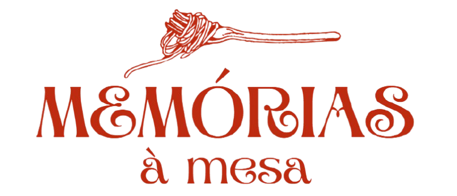

Boas-vindas a
 Quero conhecer!Sopa de Santa Rita - Pitanga,PR
Na cidade de Pitanga, no Paraná, um dos eventos mais esperados pelas famílias é a tradicional Sopa de Santa Rita, promovida pela Paróquia Sant'Ana e São Joaquim. Realizada no salão paroquial, a festa reúne a comunidade para uma noite de sabores, memórias e união. O evento é organizado pelas Operárias de Santa Rita, um grupo de mulheres que dedicam seu tempo e carinho para preparar sete tipos diferentes de sopas — entre elas, minestra, legumes, mandioca com carne, canja, entre outras receitas típicas da região. O público paga um valor fixo e pode se servir à vontade, além de ganhar sobremesa e um número para sorteios realizados durante a festa. Mais do que um jantar comunitário, a Sopa de Santa Rita é um símbolo de tradição e afeto, onde as histórias das famílias se misturam ao vapor das panelas. A cada ano, gerações se reencontram à mesa, compartilhando não só alimentos, mas também lembranças, fé e cultura.
Voz da
Ir ao evento da Sopa de Santa Rita é algo muito especial pra mim e carrega uma forte memória afetiva. Mesmo sendo no inverno, comer aquelas sopas quentes até suar, cercada pela minha família, torna tudo mais acolhedor. O mais bonito é ver como a tradição se mantém: minha mãe frequentava esse evento com os irmãos e minha avó quando tinha a minha idade. Hoje, ela vai com os mesmos irmãos, a mãe e agora também com filhos e sobrinhos. É como se o tempo se encontrasse ali, à mesa. Esses eventos comunitários trazem muito mais do que comida boa — eles carregam histórias, cultura e tradições que atravessam gerações. Você paga um valor único, come o quanto quiser, ainda ganha sobremesa e concorre a prêmios.E não importa a sua idade, de onde você vem ou se acha que é moderno demais pra um evento de igreja do interior. A verdade é que, ao primeiro prato, você já sente — ali tem algo que o tempo não leva: o aconchego de estar junto. A sopa é só o começo.
Galeria